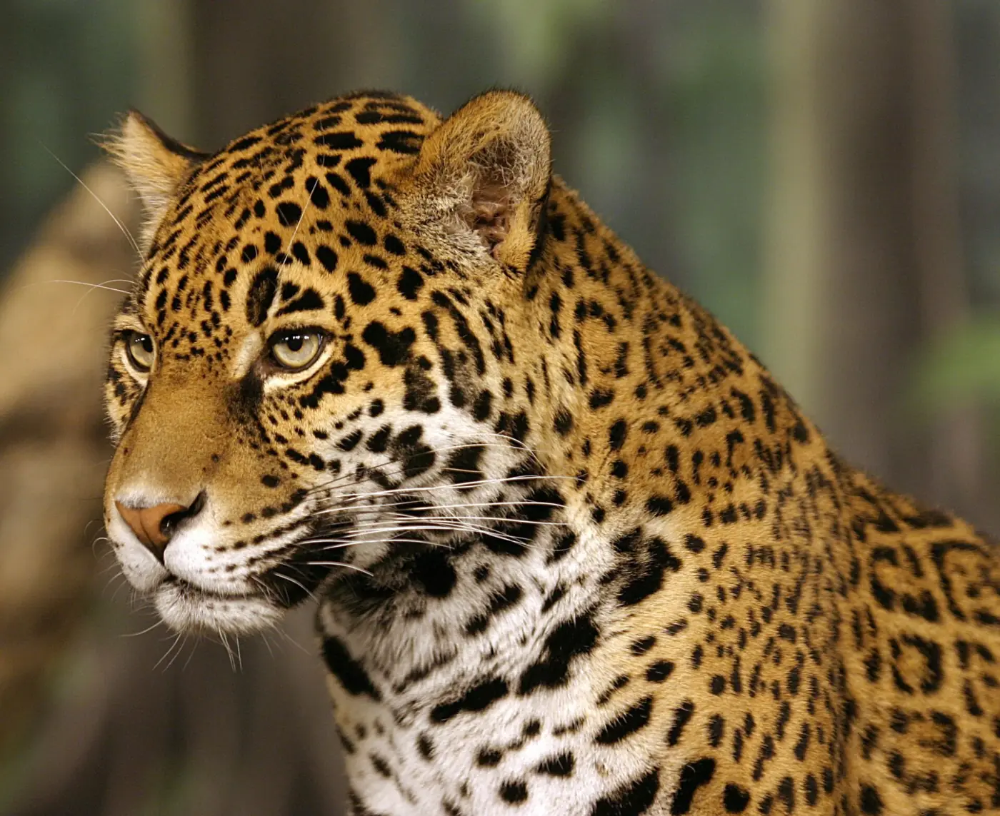
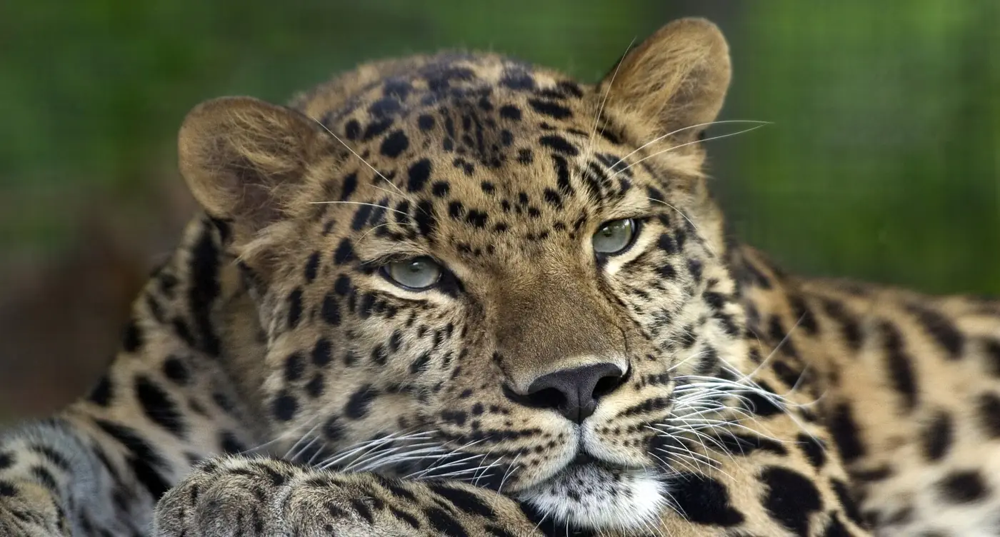
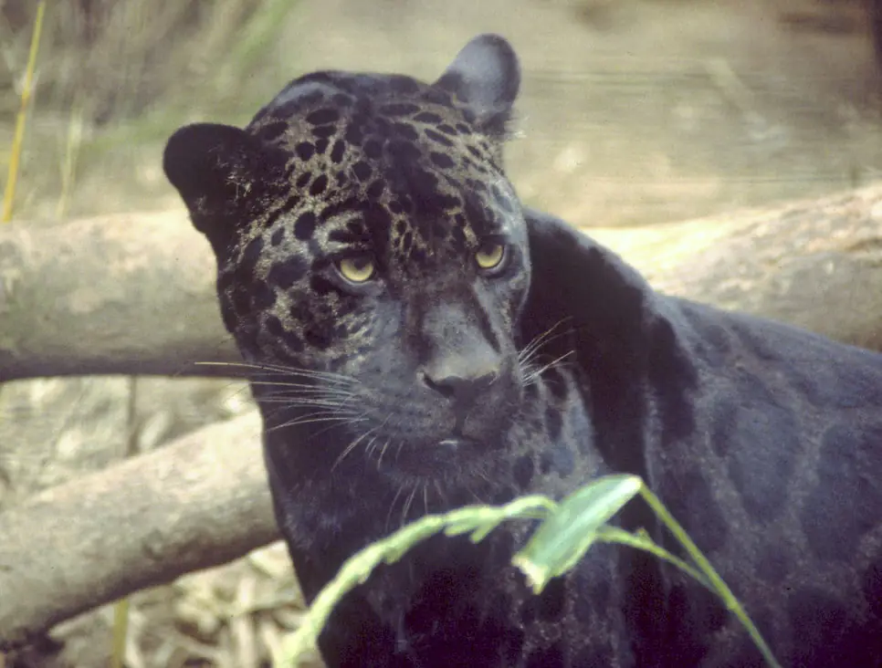
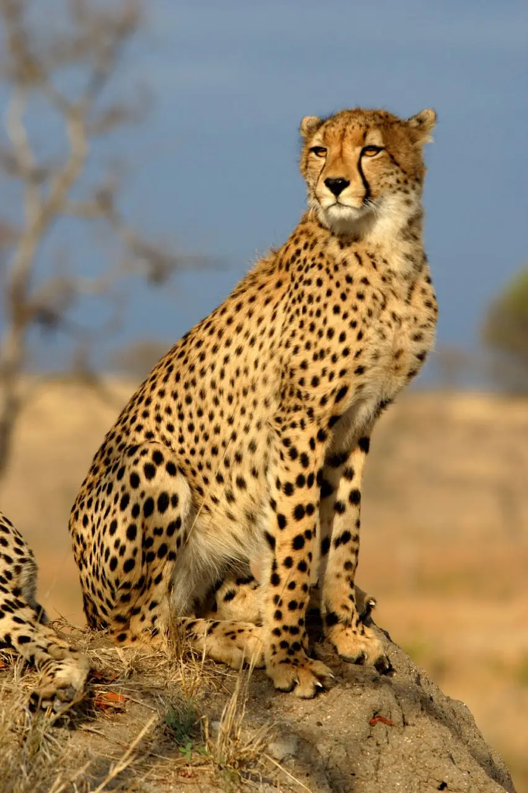
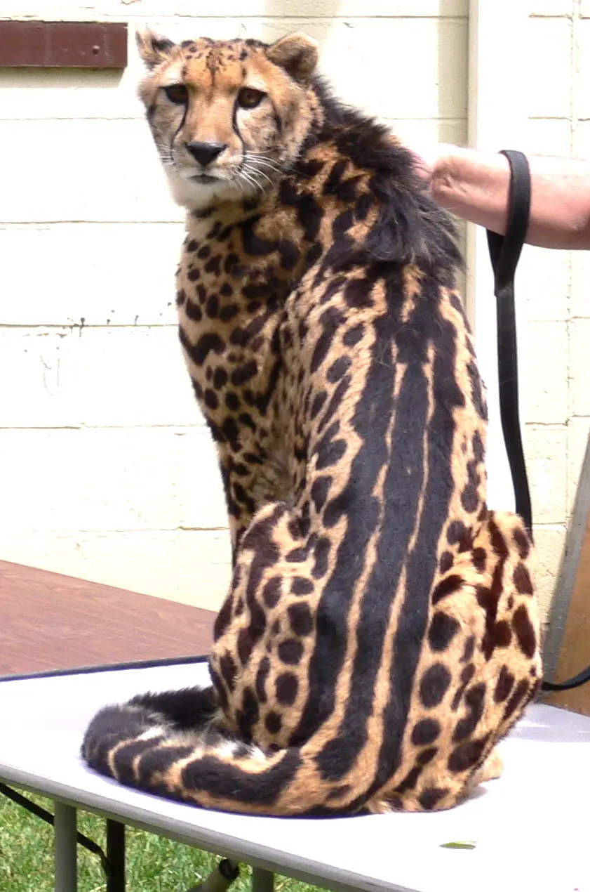
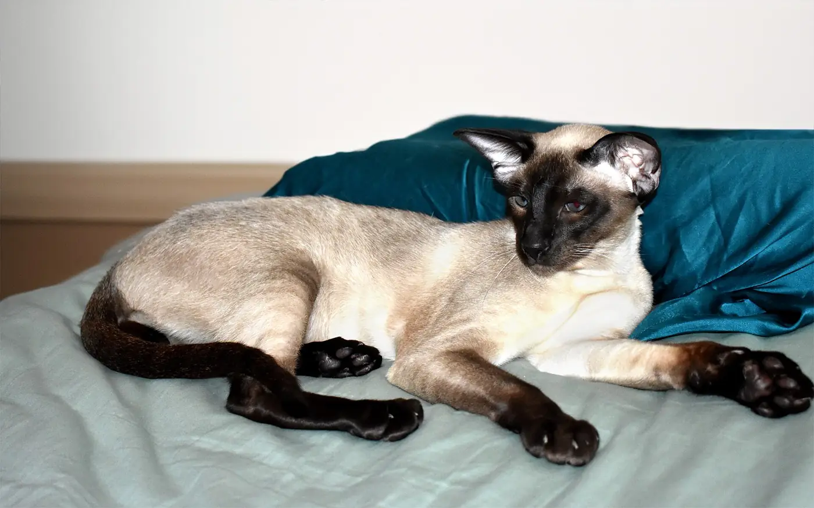
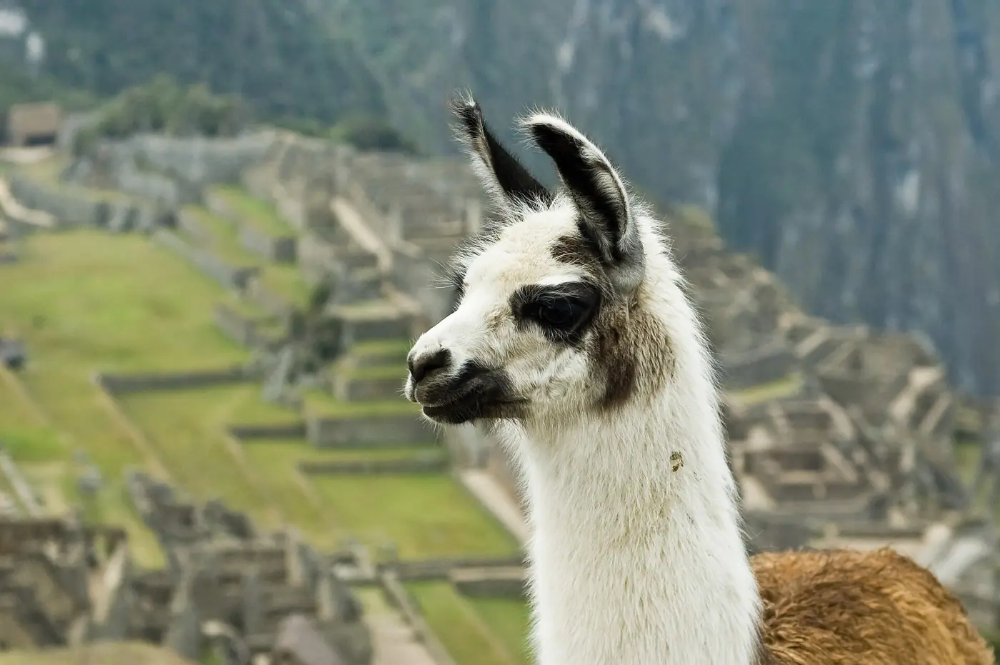
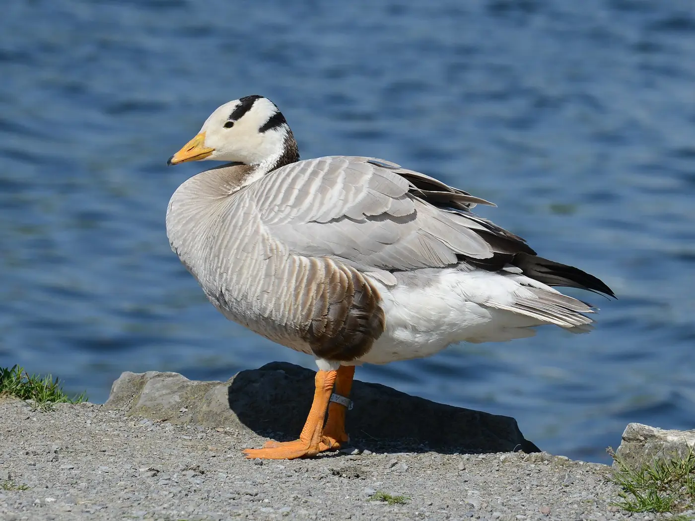
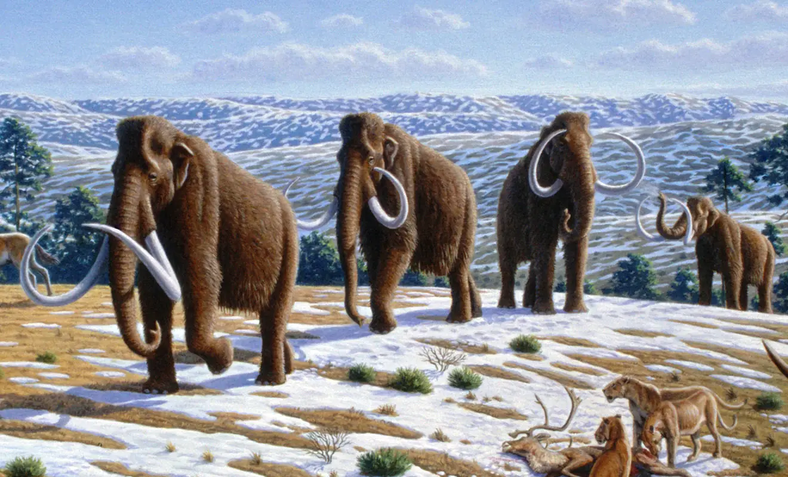
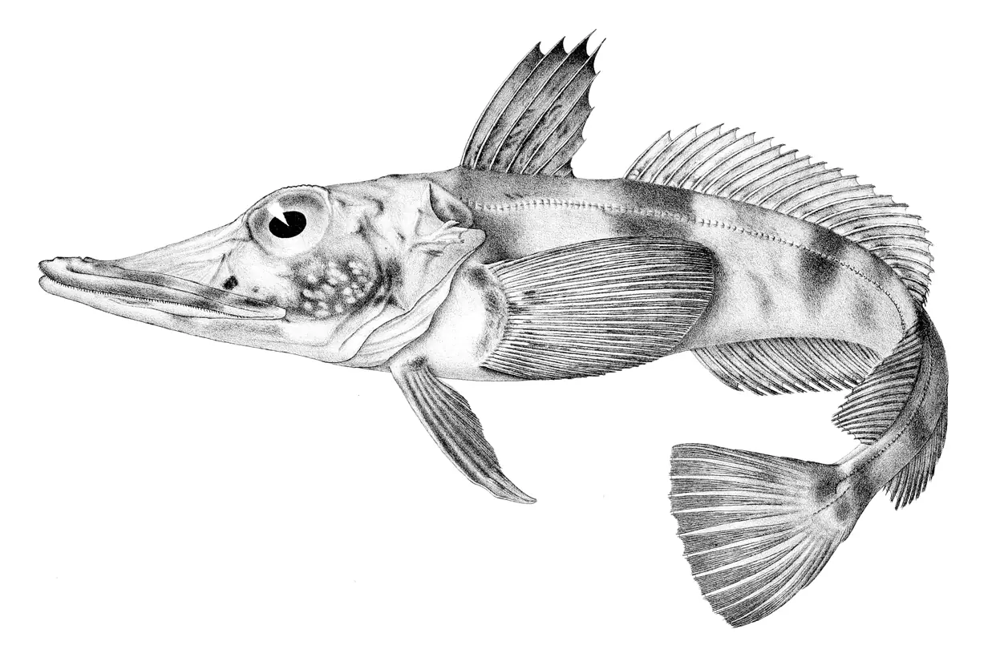

Pregunta
¿Qué le pasa a una proteína si cambia una sola letra de su ADN?
FERIA DE CIENCIAS · BIOLOGÍA
Simulamos qué le pasa a la hemoglobina, la proteína que lleva el oxígeno en la sangre, cuando cambia una sola letra de su gen.
¿Qué le pasa a una proteína si cambia una sola letra de su ADN?
Casi siempre va a cambiar la proteína, pero el efecto va a depender de qué letra cambie y cómo.
De las 1.332 formas de cambiar una letra del gen:
| Enfermedad | Cambio en el ADN | Efecto |
|---|---|---|
| Anemia falciforme | GAG → GTG | Glu6Val · cambia 1 pieza |
| Hemoglobina C | GAG → AAG | Glu6Lys · cambia 1 pieza |
| Beta-talasemia | CAG → TAG | Gln39Stop · se corta |
Una sola letra puede no cambiar nada, cambiar una pieza o cortar toda la proteína. Lo que decide es dónde cae el cambio y qué tipo de cambio es: en el mismo codón 7, cambiar la A por T da anemia falciforme, y cambiar la G por A da hemoglobina C.
Límites del modelo: es una simulación educativa. Muestra dónde cambia la secuencia, pero no calcula cómo se pliega la proteína mutada y no sirve como diagnóstico.
Es una molécula que guarda instrucciones de los seres vivos. Usa cuatro letras: A, T, C y G. En su doble hélice, A se une con T y C con G.
Un gen es un tramo de ADN. Algunos genes contienen la receta para fabricar una proteína.
La célula hace una copia de trabajo, el ARN. El ribosoma lee esa copia de tres en tres. Cada grupo, llamado codón, indica un aminoácido o una señal de parada.
Es una cadena de aminoácidos que se pliega. Su estructura ayuda a determinar su función. Las proteínas transportan sustancias, construyen tejidos y participan en las defensas del cuerpo.
La hemoglobina lleva oxígeno en la sangre. Tiene cuatro cadenas: dos alfa y dos beta. Acá exploramos la receta de la cadena beta.
Es un cambio en las letras del ADN. Se puede cambiar, quitar o agregar una letra. Mirá qué pasa con una frase que se lee de a tres letras:
Cambiar una letra afecta solo a una palabra. Quitar o agregar una letra corre todos los grupos que siguen, y el resto de la frase pierde sentido.
Usamos la secuencia codificante de HBB: 444 bases y 148 codones, incluido el STOP. Se traduce en 147 aminoácidos; la metionina inicial se retira de la proteína normal y quedan 146 piezas. Por eso, la pieza 6 corresponde al codón 7.
El modelo traduce desde el inicio de la secuencia hasta el primer STOP. Si se pierde ATG, considera que no se fabrica la proteína por esa vía. Si se pierde el STOP final, no puede calcular la longitud completa porque no incluye el ADN posterior.
Una mutación silenciosa conserva la secuencia de aminoácidos; eso no demuestra que no tenga otros efectos celulares. Las inserciones y eliminaciones de una base se agrupan como cambio de marco, incluso cuando también afectan al inicio o al STOP.
La categoría del juego «Se desordena lo que sigue» reúne dos efectos distintos: cambio de marco y pérdida del STOP. La explicación del resultado identifica cuál ocurrió.
Las piezas ausentes y cambiadas se marcan sobre la estructura original. No calculamos la estructura ni la función de una proteína mutada.
La estructura experimental PDB 2HHB fue determinada por Fermi y colaboradores mediante rayos X (1984). Mostramos sus carbonos alfa y el hierro de sus cuatro grupos hemo.
El modelo AlphaFold P68871, versión 6 predice la estructura de la cadena beta normal. Su pLDDT expresa la confianza de la predicción por aminoácido, no la gravedad de una mutación. Datos de AlphaFold DB bajo CC BY 4.0.
Secuencia proteica de referencia: UniProt P68871. La secuencia codificante es la proporcionada en el documento del proyecto y se comprueba que traduce exactamente a esta proteína.
Fotos de Wikimedia Commons con licencias libres (dominio público, CC BY y CC BY-SA). Algunas están recortadas o achicadas.

Escaneá el código y seguí probando mutaciones desde tu casa.
daniechev.github.io/Genoma-LAB-
Fuentes: estructura PDB 2HHB · modelo AlphaFold P68871 · proteína UniProt P68871
Tocá una letra del ADN, cambiala y mirá al instante qué le pasa a la proteína.
Escaneá y jugá en tu celularLa receta de la hemoglobina tiene 444 letras. Cada grupo de tres, el codón, indica una pieza de la proteína.
Una simulación educativa con una secuencia pública. No es un diagnóstico.
MÁS ALLÁ DEL LABORATORIO
Las mismas letras que cambiás en el simulador también cambiaron en personas y animales reales. Elegí una historia.
La anemia falciforme es grave. ¿Por qué es tan común en algunas regiones? Porque tener una sola copia protege contra la malaria.
Cada persona tiene dos copias del gen: una de su mamá y otra de su papá.
Esquema simplificado por país, para mostrar el patrón general. Basado en Piel y col. (2010), Weatherall y Clegg (2001) y la OMS.
Un pueblo imaginario de 100 personas. Al principio, casi nadie tiene la mutación. Elegí si hay malaria y avanzá las generaciones: ¿qué pasa con los portadores?
Con malaria, de cada 100 personas llegan a tener hijos: 85 sin la mutación, 100 portadores y 20 con anemia falciforme. Sin malaria, los que no tienen la mutación también llegan 100. Son valores ilustrativos, no medidos.
En cada generación, las copias del gen de los sobrevivientes se mezclan al azar para formar la generación siguiente (equilibrio de Hardy-Weinberg). Con malaria, la mutación crece hasta un equilibrio: los portadores ganan, pero las personas con dos copias se enferman. Por eso no desaparece ni llega a todos. Este fenómeno se llama selección balanceada.
En la vida real, en muchos países de África entre el 10 % y el 40 % de las personas son portadoras (OMS, región africana).
Se parecen tanto que mucha gente los confunde. Son primos: los dos son grandes felinos del grupo de las panteras. Pero viven en continentes distintos.
¿Cómo llegaron tan lejos? Sus antepasados vivían en Asia. Hace más de un millón de años, algunos cruzaron a América por un puente de tierra que unía Siberia con Alaska. Separados durante tantas generaciones, cada grupo cambió a su manera.

Panthera onca

Panthera pardus
Truco para no confundirlos: si ves puntitos dentro de las manchas, es un jaguar.
La «pantera negra» no es una especie: es un jaguar o un leopardo con una mutación que oscurece su pelo. ¡Las manchas siguen ahí! Se ven cuando les da el sol.

Gen MC1R · le faltan 15 letras
Como 15 es múltiplo de 3, se pierden 5 piezas justas y el resto de la receta se lee bien. El interruptor del pigmento negro queda trabado en «encendido».
Dominante: alcanza con una copia. Como una luz que quedó prendida: con una sola, el cuarto ya se ilumina.

Gen ASIP · cambia 1 letra
TGC → TGA: aparece un STOP. La proteína se corta en la pieza 111 y ya no puede frenar al pigmento negro.
Recesiva: hacen falta dos copias, una de cada padre. Como un auto con dos frenos: si uno se rompe, el otro alcanza. Por eso dos leopardos manchados pueden tener un cachorro negro.
La hemoglobina humana también tiene una cisteína, en la pieza 93, escrita TGT. Si cambiás la última letra por A, queda TGA: el mismo STOP que el del leopardo.
Distribución: esquema aproximado. Fuentes: Eizirik y col. (2003), Current Biology; Schneider y col. (2012), PLoS ONE.
Durante años se creyó que era otra especie. En 2012 se descubrió que es un guepardo común con una letra de más en el gen Taqpep: la lectura se corre y el final de la proteína sale distinto.


Recesiva, como la del leopardo negro: hacen falta dos copias, una de cada padre. Por eso dos guepardos manchados pueden tener un cachorro rey.
El mismo gen está en los gatos de casa: decide si un gato atigrado tiene rayas finas, como un tigre, o manchas grandes en remolino.
En la hemoglobina también podés agregar una letra cerca del final: la lectura se corre, las últimas piezas cambian y la proteína no sabe dónde terminar. Algo parecido le pasó al gen del guepardo rey.
Cada color es una variante genética distinta (esquema).
Hace unos 10.000 años quedaron tan pocos que hoy casi no tienen diferencias genéticas. En 1985, unos científicos pasaron piel de un guepardo a otro sin parentesco: los 14 injertos se aceptaron, como entre gemelos. En las personas, el cuerpo rechaza la piel de alguien que no es su gemelo.
Tener tan poca variedad es un peligro: una misma enfermedad puede afectarlos a todos por igual.
Fuentes: Kaelin y col. (2012), Science; O'Brien y col. (1985), Science; Menotti-Raymond y O'Brien (1993).
Su enzima del color, la tirosinasa, tiene una pieza cambiada: por una sola letra, una glicina pasó a ser arginina. Con esa pieza, la enzima solo funciona donde el cuerpo está más frío. Por eso son oscuras las orejas, la cara, las patas y la cola.

OrejasCaraPatasColaCuerpo¿Sabías? Los gatitos siameses nacen blancos: en la panza de la mamá hace calor en todos lados. Las puntas se oscurecen en las primeras semanas.
Fuentes: Lyons y col. (2005); Schmidt-Küntzel y col. (2005). El dibujo es un esquema: las temperaturas son aproximadas.
Cada especie ajustó su hemoglobina a su ambiente.

Los Andes, a unos 4.000 m de altura
¿Cómo respira donde el aire tiene poco oxígeno?
Su hemoglobina agarra el oxígeno con más fuerza, como una mano que aprieta para no soltar lo poco que consigue. Uno de los cambios clave está en la cadena beta, la misma de este proyecto: en la pieza 2 tiene asparagina en lugar de histidina.
Pieza 2: His → Asn · en el gen humano, CAT → AAT: ¡una sola letra!
Piccinini y col. (1990), hemoglobina de guanaco, llama y alpaca.

Cruza el Himalaya volando
¿Cómo vuela tan alto sin quedarse sin aire?
Un solo cambio en la otra cadena de la hemoglobina, la alfa, afloja una unión entre las cadenas y hace que capture más oxígeno. Cuando los científicos pusieron ese cambio en hemoglobina humana, también capturó más oxígeno.
Cadena alfa, pieza 119: Pro → Ala
Está en otro gen (alfa), así que no se puede probar en este simulador.
Jessen y col. (1991), PNAS.

Siberia, durante la Edad de Hielo
¿Cómo llevaba oxígeno con un frío extremo?
Con frío, la hemoglobina común suelta mal el oxígeno. Científicos reconstruyeron la del mamut a partir de ADN antiguo: tres cambios hacían que la soltara igual de bien aunque hiciera frío, y así perdía menos calor.
Los tres son de una sola letra en el gen humano. Probá cada uno:
Campbell y col. (2010), Nature Genetics. En el mamut, esta cadena es una mezcla de beta y delta.

Antártida, en agua a casi −2 °C
¿Cómo vive sin nada de hemoglobina?
No tiene hemoglobina: su sangre es casi transparente. En la mayoría de estas especies, el gen de la cadena beta directamente desapareció. Sobrevive porque el agua helada tiene mucho oxígeno disuelto, y tiene un corazón grande y mucha sangre.
Podés imitarlo: si se pierde la señal de inicio ATG, no se fabrica la cadena beta.
Cocca y col. (1995), PNAS.
Casi todas las personas de ojos celestes comparten la misma letra cambiada, heredada de un antepasado común que vivió hace unos 6.000 a 10.000 años.
La letra está en el gen HERC2: una A cambió por una G. No está en la receta de ninguna proteína, sino en un interruptor que regula al gen que fabrica el pigmento marrón. Es como bajar la perilla de una luz: el ojo fabrica menos pigmento y se ve celeste.
¿De qué color son tus ojos?
Para tener ojos celestes suelen hacer falta dos copias de esta letra, una de cada padre; otros genes también influyen, por eso hay tantos tonos. La fecha es una estimación. Fuente: Eiberg y col. (2008), Human Genetics.
El gen MC1R del jaguar negro es el mismo que da el pelo colorado en las personas. Funciona como un interruptor entre dos pigmentos: uno negro y marrón, y otro rojo y amarillo.
Le faltan 15 letras y el interruptor queda trabado en «encendido»: fabrica solo pigmento negro. Es dominante: alcanza con una copia.
Un cambio en la receta deja el interruptor apagado: la célula fabrica pigmento rojo. Es recesivo: hacen falta dos copias. Hay varios cambios distintos que lo apagan.
Mismo gen, efecto contrario: en el jaguar queda siempre prendido; en los pelirrojos, apagado.
Fuentes: Valverde y col. (1995), Nature Genetics; Eizirik y col. (2003), Current Biology.
En el Tíbet hay pueblos que viven a más de 4.000 m de altura. Muchos tienen una variante del gen EPAS1 que heredaron de los denisovanos, una especie humana que se extinguió.
Cambió su hemoglobina: agarra el oxígeno con más fuerza.
Cambió cuánta hemoglobina fabrican. En la altura, casi todas las personas fabrican de más y la sangre se pone espesa. Con esta variante, no se pasan.
Hace decenas de miles de años, los antepasados de los tibetanos tuvieron hijos con denisovanos. Esa variante quedó en su ADN y, en la montaña, fue una ventaja: la selección natural la volvió común.
Fuente: Huerta-Sánchez y col. (2014), Nature.
EL EXPERIMENTO COLECTIVO
Cada resultado revelado suma una mutación. Los datos se guardan únicamente en este navegador.
Al probar las 1.332 sustituciones posibles del gen HBB:
| Efecto | Casos | Porcentaje |
|---|
Esta tabla solo cuenta cambios de una letra por otra. El público también quita y agrega letras, así que sus resultados no tienen por qué coincidir.